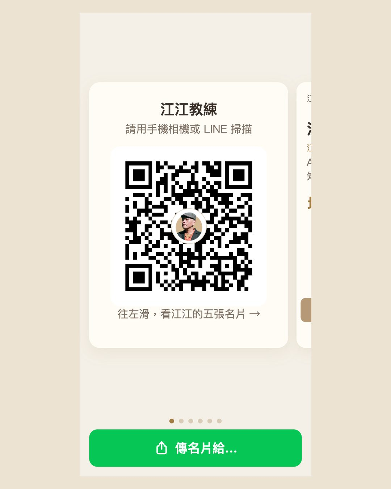
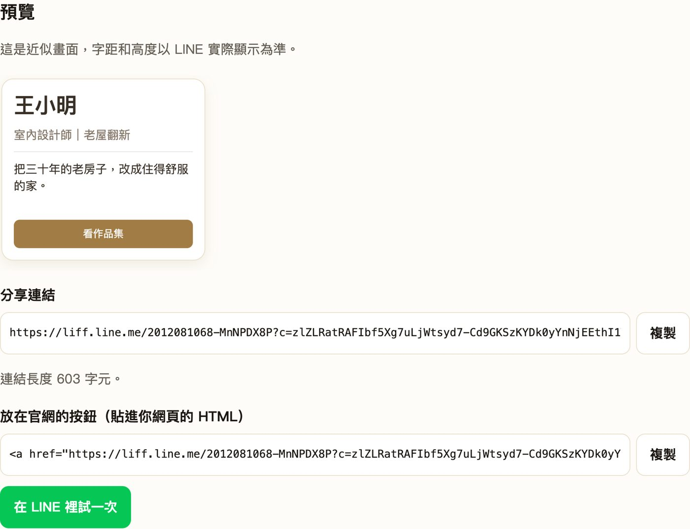

我做好一組 LINE 名片，把網址丟進 LINE，對方看到的只是一行連結。原因是 LINE 的圖文名片（Flex Message）不能靠貼網址傳；用個人帳號傳的話，最直接的做法是從 LINE 的分享畫面送出。這篇記下我怎麼在官網放一顆按鈕：訪客一按，LINE 就跳出選好友、選群組的畫面，對方收到的是可以左右滑的五張名片。也附上我做成小工具的「LINE 名片分享器」，不寫程式也能做出自己的分享連結。
- 做好了 LINE 名片，貼到聊天室卻只看到一行網址的人
- 想在自己官網放一顆「分享我的 LINE 名片」按鈕，讓客戶幫你轉傳到群組的人
- 幫客戶做官網或數位名片，想多交付一個 LINE 分享入口的人
- 名片為什麼貼進聊天室只是連結，以及正確的送法
- 自己開 LINE 分享器（LIFF）要做的三件一次性的事，和一件不能反悔的事
- 不寫程式的做法：用 LINE 名片分享器產生分享連結，加上一段請 AI 把官網寫成名片 JSON 的提示詞
為什麼 LINE 名片貼進聊天室只是一行連結
我第一次做好名片，就把網址丟進 LINE 試。結果對方看到的是一行網址，點進去才是網頁。後來又試了一次 LIFF 網址，一樣只是連結。
LINE 的圖文名片叫 Flex Message，它是一種「訊息」，不是網頁。網頁可以用網址分享，訊息不行。官方帳號可以用 Messaging API 直接傳卡片；但我要的是「任何人用自己的 LINE 把名片轉給朋友」，我用的做法是 LINE 的分享畫面，這個畫面在 LINE 的開發工具裡叫 shareTargetPicker：按下去會列出你的好友和群組，可以多選，選完按送出。
能叫出這個分享畫面的，是在 LINE 裡打開的網頁（LIFF，LINE Front-end Framework）。所以官網那顆按鈕實際做的事是：把人帶進一個在 LINE 裡打開的分享頁，分享頁讀名片檔，叫出選人畫面。
我現在的 LINE 名片有三個入口
同一組五張名片，我依照「誰在用、在什麼場合」做了三個入口：
| 入口 | 誰在用 | 做什麼 |
|---|---|---|
| 官網首頁的分享按鈕 | 逛官網的人 | 手機按下去，LINE 跳出選好友、選群組，對方收到五張可以左右滑的名片 |
| Line 卡 | 掃我 QR Code 的人 | 上面一顆「加江江 LINE 好友」，中間五張名片，下面「轉傳這組名片」 |
| Line App | 我自己，見面時拿手機給對方看 | 第一頁是中間有頭像的 QR Code，往左滑是五張名片，底下固定一顆「傳名片給…」 |

見面的流程是這樣：我打開手機上的 Line App，對方用手機相機或 LINE 掃 QR Code，打開的是 Line 卡，可以加我好友。接著我往左滑，一張一張介紹名片。最後按「傳名片給…」，選剛加好友的他，名片就進到我們的聊天室。
Line App 可以在 iPhone Safari 按分享鈕，選「加入主畫面」，桌面上就會多一個綠色的「Line App」圖示，見面時一點就開。
自己開 LINE 分享器：三件一次性的事
網路上有人做好的分享器，貼上名片就能分享。我一開始也借用過，後來還是自己開，原因是我不想把官網上的按鈕綁在別人的服務上。對方哪天改版或關掉，我官網的按鈕就壞了。
自己開要到 LINE Developers 後台做三件事，都是一次性的。不想碰後台的話，可以直接跳到第五段的分享器。
在自己的 Provider 底下建立。名稱會被 LINE 檢查，我原本想取的名字含「LINE」存不進去，最後改成「數位名片製作」。
LIFF 的網址填你官網上的分享頁（我的是 /card/share/），打開 shareTargetPicker 時要按一次資訊使用同意書。
沒公開前只有自己能用，別人按了會失敗。改成公開後才是所有人都能分享。
分享頁本身很短：載入 LINE 的 LIFF SDK，登入後讀名片檔 line-flex.json，呼叫 shareTargetPicker，可以多選好友和群組。核心只有這幾行（你的LIFF_ID 換成後台給你的 ID）：
名片檔 line-flex.json 放完整訊息：{"type":"flex","altText":"…","contents":{…}}。第一次使用時 LINE 會跳出一次授權畫面，按允許之後才會出現選人畫面。
- 我做的網頁，要放在哪裡別人才打得開？：分享頁就放在官網上；如果你還沒決定網頁放哪裡，先看這篇。
LINE 名片怎麼排：我踩過的坑
名片本身是一份 JSON。我用 LINE 官方的 Flex Message Simulator 一邊排一邊量，改了好幾版，留下這幾條：
- 輪播會被拉成最高那張的高度。五張左右滑的名片，LINE 會把每張都拉成跟最高那張一樣高。要壓高度，五張要一起壓。
- 我最後用直式 3:4。太長的名片在手機上要捲，3:4 一眼看得完。
- 人像要先裁好圖。Flex 不能像網頁用 CSS 放大裁切，所以我先把照片裁到肩膀，放進咖啡色底的圓框，再放進名片。
- 動圖用 APNG，每張 300KB 以內。我第一張名片放了咪卡坐在桌前的 8 格逐格動畫。
- 不用每張都放按鈕。第 2 到 4 張只講重點，按鈕集中在第 1 張：「用 LINE 聯絡江江」連到我的個人 LINE。
- 最後一張只放一行字。見面時我是在我們兩個的聊天室裡傳名片，對方已經是好友，所以第 5 張我只寫「直接在 LINE 回覆江江，立刻約免費 30 分鐘線上諮詢」，不再把人帶去別的地方。名片被轉到群組時，群組裡的人可以用第 1 張的「用 LINE 聯絡江江」加我。
不寫程式：用 LINE 名片分享器做自己的分享連結
我把分享的部分做成官網上的小工具：LINE 名片分享器。你只要準備好名片 JSON，就能拿到一條分享連結，放到自己的官網上。
- 到 LINE 官方的 Flex Message Simulator 排好名片，按
View as JSON複製；或用下面的提示詞請 AI 幫你寫。 - 名片裡的圖片放在
https://開頭的公開網址，最好放在你自己的官網上。 - 貼進分享器，按「檢查並預覽」。通過的話會拿到分享連結和一段官網按鈕的 HTML。
- 用手機 LINE 打開分享連結，先傳給自己試一次，再把按鈕貼上官網。

幾件要先知道的事：名片內容存在連結裡，分享器不保存你的名片，名片改了就要重新產生連結；按鈕只能連到網址、LINE、電話、Email；一組最多 12 張，張數越多連結越長，建議 3 到 5 張。
也可以直接把分享器頁面上的兩份說明檔交給你的 AI：名片製作指南會先訪談你再寫名片 JSON；在自己官網裝分享按鈕會帶你做自己的分享頁。
請 AI 把官網寫成名片 JSON 的提示詞
AI 寫出來的 JSON，先貼到 Flex Message Simulator 看實際長相，再貼進分享器。分享器的預覽是近似畫面，以 LINE 實際顯示為準。
LINE 名片被分享了幾次怎麼看
分享頁在對方按下送出之後，記一次「送出」的次數。只記次數，不記是誰、傳給誰。我的官網本來就有自己的流量統計，這個次數跟頁面瀏覽數放在同一個後台看。
- 裝了 Google Analytics，為什麼還是不知道訪客卡在哪？：官網自己記流量的做法，分享次數就是記在這套裡。
- LINE 名片分享器：貼上名片 JSON，拿到分享連結與官網按鈕。
- Line 卡、Line App：江江自己的 LINE 名片兩個入口。
- 託管平台決策樹、自己記流量
- 網站做完之後就沒人再打開了：官網除了對外介紹，也可以是自己每天用的工作站，Line App 就是這樣用的例子。
- 通訊軟體對 AI 友不友善：比較 LINE、Telegram、Discord、Slack 讓 AI 接進去的難易。
想把你的官網做成 LINE 名片
要放幾張、每張講什麼、按鈕連去哪裡，可以直接在 LINE 找我聊。
江江自己的五張名片就在分享器頁面上，可以先滑過一次。